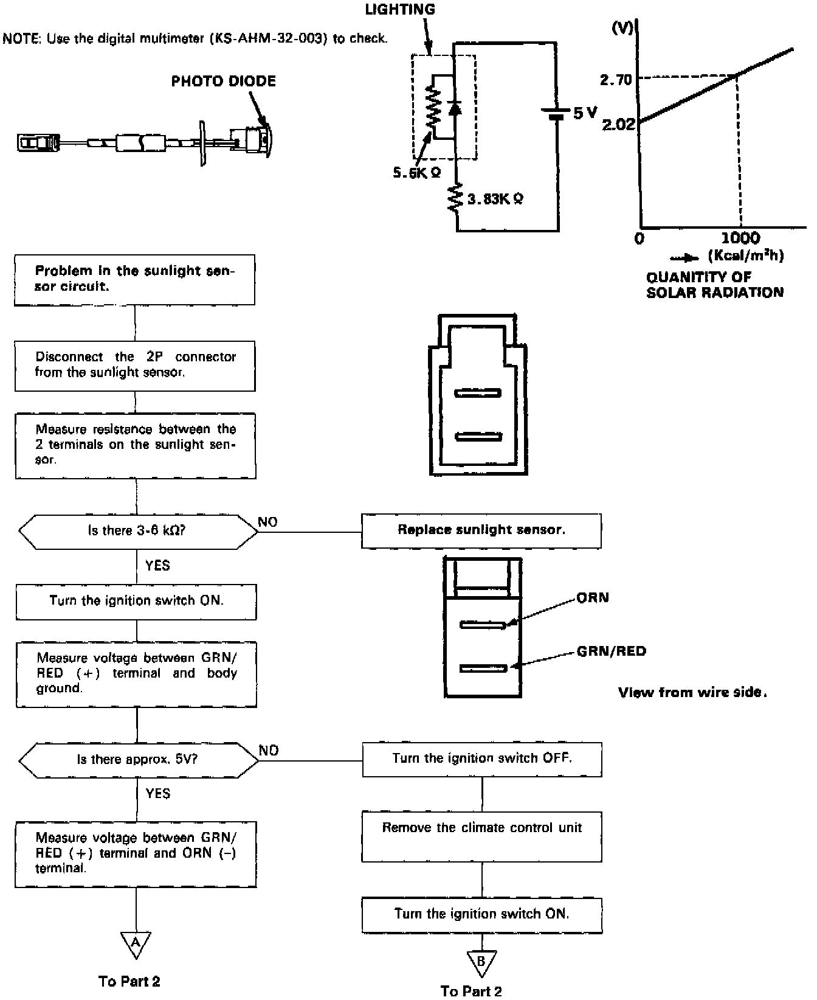
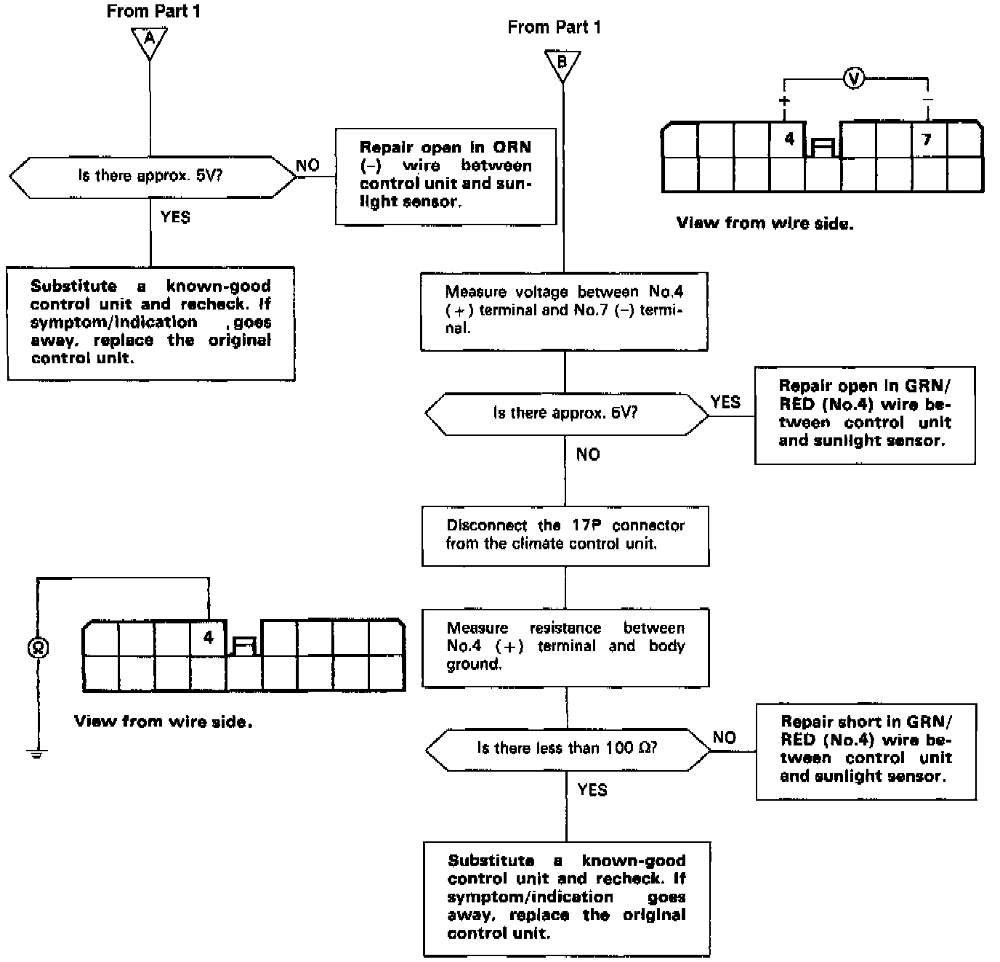

Sunlight Sensor
Self-diagnosis indicator light E comes on: Indicates a problem in the Sunlight Sensor circuit.The sunlight sensor is a light sensitive, variable resistance diode. The resistance of the diode increases as the intensity of the light increases, as shown below.

